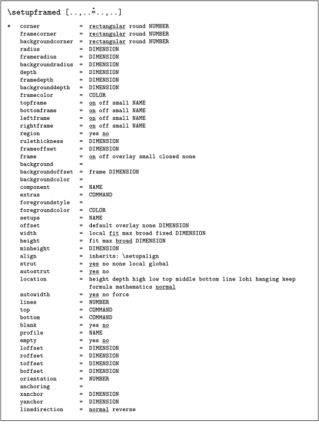

< Modules
Contents
Introduction
When and for what should you write a public module?
- reusable code
- general enough that it may be of use for others
- complex enough that it’s more than a few settings
- style modules (environments as modules) should be meant to be used unchanged (e.g. for a magazine)
What to aim for:
- usual ConTeXt behavior (define, setup, start…)
- key-value setup
- helpful documentation
- long-term support
- fun ;)
What to avoid:
- interfering with core features/commands
- offering options for settings that are better handled by default setup commands (e.g. fonts)
- modules for just a few settings
- using undocumented low level features (they’re prone to change)
- “write and forget” projects; i.e. unmaintained modules
Please don’t publish support modules for text fonts any more! They’re usually unnecessary. Instead publish typescripts in the wiki instead. Support for symbols or unusual scripts might make sense.
Basics
- Modules are loaded with \usemodule .
-
Main module files can start with m, p, s, x or t:
- m: core module
- p: private code (unpublished)
- s: style file (more or less equivalent to an environment)
- x: XML code (support for a XML format)
- t : “third party” modules – the usual choice for your module
-
File extensions for module files can be tex, cld, lua, mkiv, mkvi, mkxl or mklx
-
If you mostly use TeX (ConTeXt) commands and don’t need to distinguish between code for MkIV and LMTX, use
tex. -
Use
mkivfor MkIV-only code andmkxlfor LMTX-only; base names can be the same. - Of course you can use other file extensions for auxiliary files.
-
If you mostly use TeX (ConTeXt) commands and don’t need to distinguish between code for MkIV and LMTX, use
-
Choose a short and unique name that hints at the function or is at least original.
- CTAN conventions : For compatibility, use only 7 bit ASCII lowercase characters for the main file name (ID); the module title may (but should not) differ (e.g. file t-somemod.tex vs. title “SomeModule”). Use hyphens if you must, don’t use underscores.
- Avoid naming conflicts with core features or other modules.
- If you add code/files by others, check their license! Don’t add copyrighted stuff!
Directory structure
While a module usually consists of one main file with a name like t-modulename.[tex|ctx|mkiv|mkxl], there can be many more files, and there should be some documentation.
Sort these files into folders according to TDS (TeX directory structure):
- Top level files: README, VERSION, LICENSE (required for publication, get moved to doc on installation)
- Code files: tex/context/third/ modulename
- Documentation: doc/context/third/ modulename
- Scripts: scripts/context/lua/third/ modulename (extensions for mtxrun script )
- Fonts: fonts/data/ modulename (only free-licensed and if crucial for your module)
- Interface: tex/context/interface/third (interface xml files for modules aren’t used yet)
Maybe also have a look at the distribution to understand what goes where.
There can be more top level files that might be useful for publication on CTAN, e.g. preview images.
Don’t publish unnecessary files! i.e. leave out everything that gets automatically created (e.g. *.log, *.tuc, *.tuo, m_k_i_v_*), backups (e.g. *.bak, *.sav) or that is only relevant to other programs or the operating system (e.g. .DS_Store, __MACOSX, .thumbs). If you use git, you can list these in a .gitignore file.
Techniques
See e.g. Wolfgang’s presentation (PDF) at ConTeXt meeting 2024.
In order to avoid conflicting macros it is essential for a module that it adheres to the namespace convention. After releasing a module add it to the list in Modules for other module authors to know.
Module requirements
Module release file
- A release file is a ZIP archive that contains the necessary files in a TDS compliant structure.
-
The filename should be
modulename-version.zip, where the version is usually a date like YYYY.MM.DD . - On the top level there must be a VERSION file that only contains your version string.
- On the top level there should be a README(|.md|.txt) file with some metadata like a short description and author info.
- On the top level there can be a LICENSE file containing the text of an open source license of your choice, if the license is not included in the README.
- On the top level there must NOT be a folder with the module name, but only TDS folders like "doc" and "tex".
The same applies for git/SVN repositories containing ConTeXt modules.
VERSION and README files are important for publication on CTAN. README is also displayed on git platforms like GitHub or Codeberg and should contain basic documentation. All top level files are ignored by the LMTX module installer.
Instead of zip files, also tar.gz archives are possible, but the installer script can only handle zip – libzip is a necessary part of Lua(Meta)TeX, while other archive formats are not.
Module main file
All module files should start with a block containing meta information about that module. There is a Module template available to help setting up that header correctly.
License
Do not forget to specify a license as the permitted modes of distribution depend on which one you choose. The ConTeXt sources are licensed either under GPLv2 or the LPPL, so you might want to stick to these or a more permissive license. (Choose one: [1].) Including the full text of your license in your source repo is best practice.
Documentation
README
A README(|.txt|.md) file makes sense in a public git repository and for publication on CTAN. It should contain:
- title of the module
- a short explanation what it does
- dependencies (ConTeXt LMTX, fonts, other programs)
- a hint on installing (e.g. via mtxrun)
- an example of its use
- references to further documentation
- authors/contributors
- license
Manual
If a simple example and the self-documenting source code isn’t enough to understand usage and options of your module, please include a manual (source and PDF). You can use the How to make a MyWay style.
Self-documenting source code
Source files are supposed to contain explanatory comments that document implementation details and other peculiarities the reader should be aware of.
ConTeXt provides several variations of comments to automatically create PDF documentation, see below.
TeX files
In .tex files (and other files containing primarily TeX code, e.g. .mki[iv]), any line beginning with a comment leader will be treated as a docstring. Formatting is done via ordinary TeX commands.
%D Use this comment type for examples and explanations %D of the module. Keep in mind that each comment block %D creates a local group when you change settings.
%M Use this comment type to load additional modules %M (even the one you’re documenting at the moment) %M or make layout changes, because unlike the previous, %M type settings are global.
%C Use this comment type for text which should remain %C commented in the output, e.g. license information.
%S B %S This comment type is used when you add text which %S should ignored/skipped. It is necessary to use "B" %S at the first and "E" at the last line. %S E
The latter style is never used in the source code of ConTeXt.
Lua files
In Lua files (e.g. .cld) multi-line comments start with --[[ldx-- and end with --ldx]]--. Text inside those delimiters can be formatted using basic HTML tags. Ordinary comments are still treated as part of the source and therefore they will be typeset inside the listing.
Create the documentation
Docstrings, though they appear to the (Lua)TeX interpreter as ordinary comments, allow for pretty printing source code when used with two dedicated modules:
Thus, in order to generate the documentation for the hypothetical
simple module, you first have to chdir to the module’s code directory.
Next you run the pretty printer on its main file
context --ctx=s-mod t-simple.tex
to get a t-simple.pdf which contains the – sparse – annotations in serif and the actual code as colorful listing.
Likewise the processing of Lua code, e.g. font-def.lua from the main ConTeXt tree:
context --ctx=x-ldx font-def.lua
Which should generate a font-def.pdf in your current directory.
XML Interface file
Each module should have an associated XML specification file (as in /tex/context/interface/cont-en.xml). Its purpose is a comprehensive listing of the optional and non-optional arguments accepted by macros defined in the module.
From the interface a good deal of documentation can be auto-generated, as are for instance the ConTeXt Quick Reference and the initial input of the Command Reference, which itself started as a wikification of the now obsolete TeXshow.
When documenting your module, you can use
\usemodule[setups-basics] \loadsetups[t-name-of-your-module.xml] % to load the file with definitions \setup{nameofyourcommand}
An example:
-
\setuppapersize[A5] \usemodule[setups-basics] \loadsetups[i-framed] \setup{setupframed}
- 
By default, this places a frame around the setup. If you want to get gray background, as in the ConTeXt documentation, add a setup like:
\setupframedtexts [setuptext] [background=color, backgroundcolor=lightgray, frame=off]
Apart from the existing XML files in the ConTeXt tree, there is little documentation online, so feel free to relay your questions to the mailing list.
Unfortunately, this is still not used by anything else than your own documentation, but e.g. ConTeXt support for editors that relies on interface files could be easily extended to module interfaces.
Publication and maintenance
Beware, Taco is planning to rewrite the module website ATM (2024-10), this information might be slightly outdated.
- Please upload your module(s) to https://modules.contextgarden.net ! Our server scripts handle distribution for ConTeXt and CTAN.
- Register an account, then you can login to the “member section”.
- If you lost your password, please ask Taco (via the mailing list if you don’t know them).
- Please read the help page (it’s mostly the same as here).
-
Create a
new module
entry with a distinct name (e.g. “simple”; this will become the internal ID) and fill in the metadata:
- Title (misleading, best use the same as before) “simple” (This will get used in filenames!)
- Short and longer description (the short desc. is meant as the name and gets published e.g. in CTAN updates).
- Home URL, if the module has a homepage, e.g. a wiki page or git repository.
- Keywords (for CTAN search)
- Type: Macro or font (Please don’t publish font modules any more! Style, lua and xml modules will get added soon.)
- Works with Mk... (please check)
- License (there are licenses missing, we need to fix that)
- Check “Put in download section” (yes please, allows installation by script)
- Check “Put in ConTeXt distribution” (ATM just a hint for the admins, no automation)
- Check “Synch with CTAN” (yes please, makes it visible; ATM just a hint for the admins)
- CTAN location: e.g. “ /macros/context/contrib/context-simple ”
- Comment: for you or the server admins
-
Create a
new module version
from a ZIP upload/download or checkout from SVN or git
- Log message: short information about changes in this version (if empty, latest commit message is used)
- Version: usually YYYY.MM.DD (hyphens are also ok; please avoid other versioning schemas)
- File upload / HTTP download URL: release file as ZIP, as outlined above
- SVN/GIT URL: repository checkout, structured like the ZIP, as outlined above
As a module author, it makes sense to subscribe to the developers mailing list.